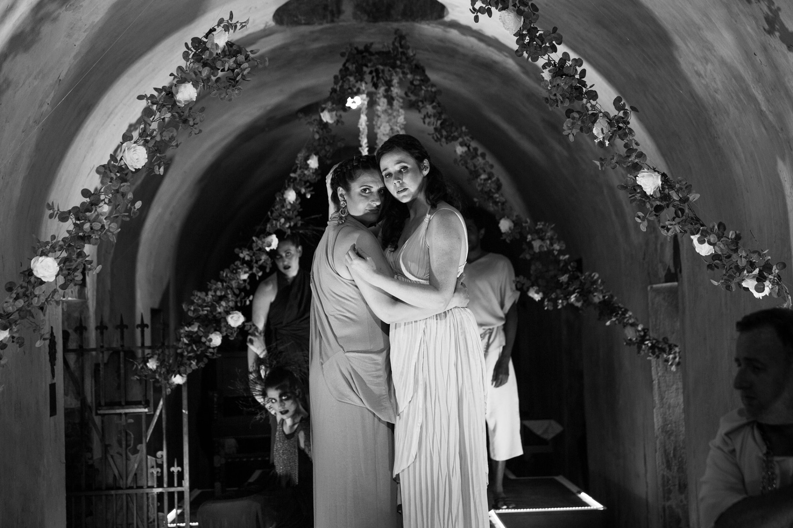

DIDO AND AENEAS
"...Brooke Larimer was a charismatic Second Woman, here renamed Anna, Dido’s sister. Singing with passion while sprawled on the floor in a backwards position, a la Netrebko, she certainly made the most of her short scenes." --Julieta Gomez De Mello, OperaWire.com, June 11, 2019.
“Dido's sister Anna [Second Woman] was sung by the excellent Brooke Larimer....The musical values were undeniably magnificent with these gorgeous voices...” --Meche Kroop, Voce di Meche (vocedimeche.reviews), June 5, 2019.
LA TRAVIATA
“Brooke Larimer's lusty presence and commanding voice make her a stand-out as Violetta's fun-loving friend Flora.” --Linda Loomis, Syracuse.com, February 3. 2018.
FALSTAFF (Pittsburgh)
"Vocally, the cast is one of uniform excellence...As Mistress Quickly, mezzo-soprano Brooke Larimer displayed a richly hued voice and nicely timed comedic ability." --George B. Parous, Pittsburgh in the Round (pghintheround.com/), May 13, 2017.
DIALOGUES OF THE CARMELITES
"...mezzo-soprano Brooke Larimer as Madame de Croissy, the Prioress — stunningly dramatic in her deathbed scene..." --Daniel Hathaway, ClevelandClassical.com, February 28, 2017.
MACBETH
"Among the coven of notable mention was Brooke Larimer whose credited role of Lady-in-waiting by default also made her lead among her wicked brethren - a vibrant mezzo Hecate in full force. The dual casting stirred the plot to greater intensity by adding a demonic double agent perspective to the loyal servant." --Thomas Dyer, Berkshire Fine Arts (berkshirefinearts.com), November 2, 2013.
FALSTAFF (Boston)
"Brooke Larimer as Mistress Quickly was the quintessential contralto-soubrette, Italian-American sexpot, with some of the most convincing physical realization of character in the whole production." --Janine Wanée, The Boston Musical Intelligencer (classical-scene.com), July 17, 2011.
"Impressive singing actors fill the major roles...Mezzo-soprano Brooke Larimer, Mistress Quickly in toreador pants, boa, and hoop earrings, proves she can sing and chew gum at the same time." --Lloyd Schwartz, The Boston Phoenix, July 20, 2011.
SWEETS BY KATE
"...mezzo-soprano Brooke Larimer as Madame de Croissy, the Prioress — stunningly dramatic in her deathbed scene..." --Daniel Hathaway, ClevelandClassical.com, February 28, 2017.
CARMEN
"...these youthful voices showed real promise for the future. Brooke Larimer gave us a dark, husky...[and] rapacious Carmen." --Mark Kroll, The Boston Musical Intelligencer (classical-scene.com), July 28, 2009.
SERENATA ITALIANA
"The line-up...include[s] Rutland bred singer, Brooke Larimer who possesses a deep and powerful true mezzo instrument....Larimer keeps her smooth voice centered and in tune which makes for easy listening." --Thomas Dyer, Berkshire Fine Arts (berkshirefinearts.com), May 24, 2014.
DIE ZAUBERFLÖTE
"Eden Casteel, Jennifer Marshall, and Brooke Larimer were the mysterious ladies-in-waiting to the Queen of the Night. All three women possess big voices and worked well together to convey the eeriness of their characters." --Chris Browner, thebentnailopera.wordpress.com, November 27, 2010.
"Eden Casteel, Jennifer Marshall and Brooke Larimer as the Three Ladies - carried the music and action with aplomb." --Milton Moore, TheDay.com, December 5, 2010.
"Eden Casteel, Jennifer Marshall, and Brooke Larimer all did a fine job as the Queen's minions." --Michael Hetsko, Opera-L, December 5, 2010.